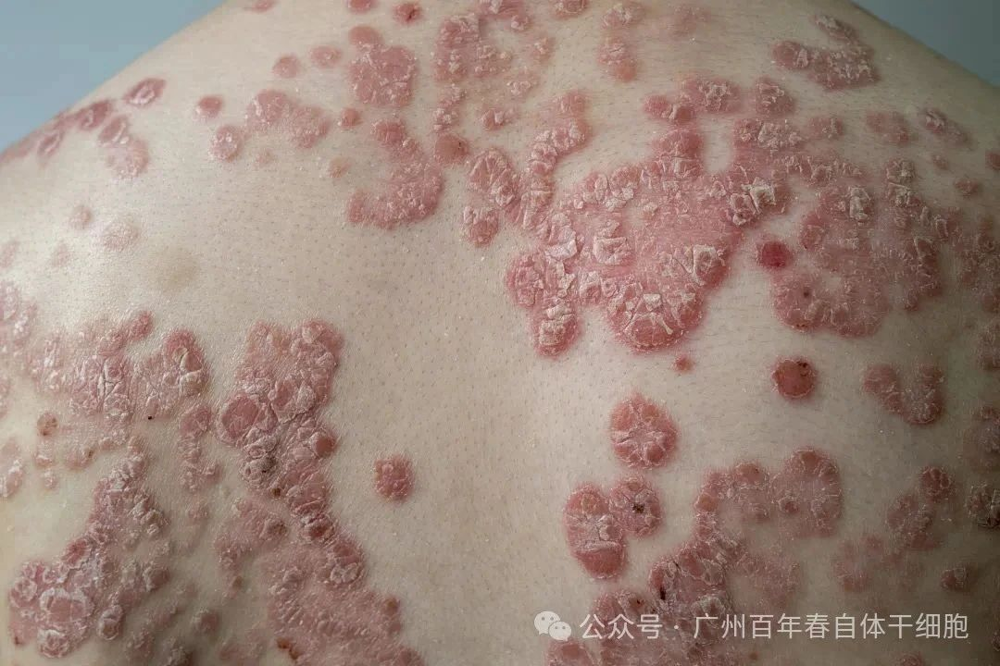
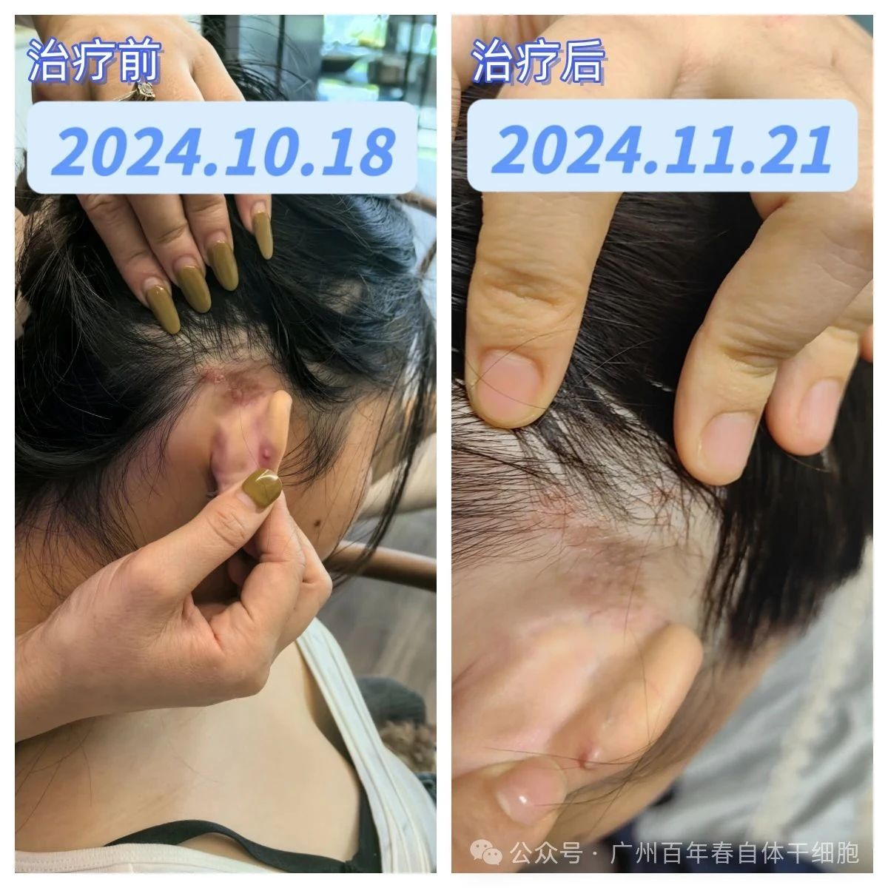
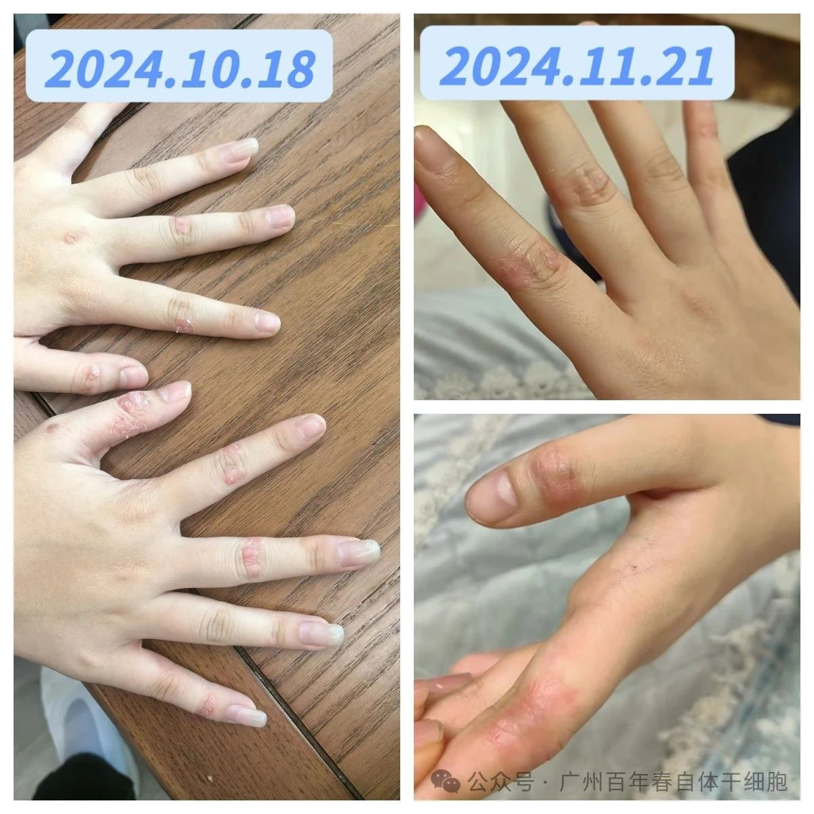
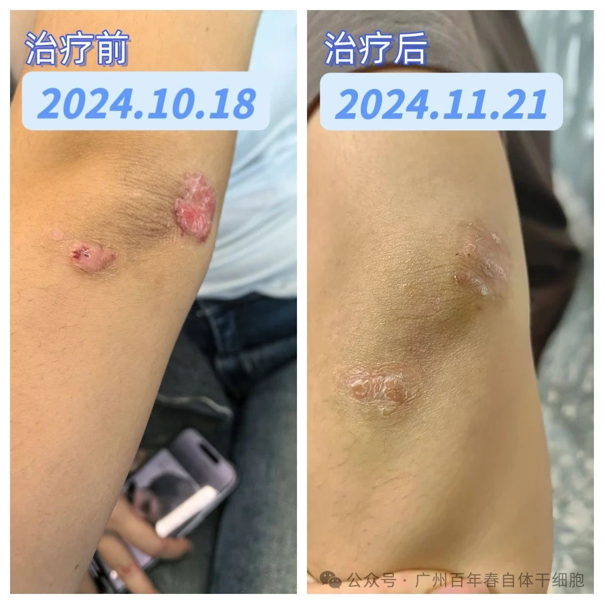
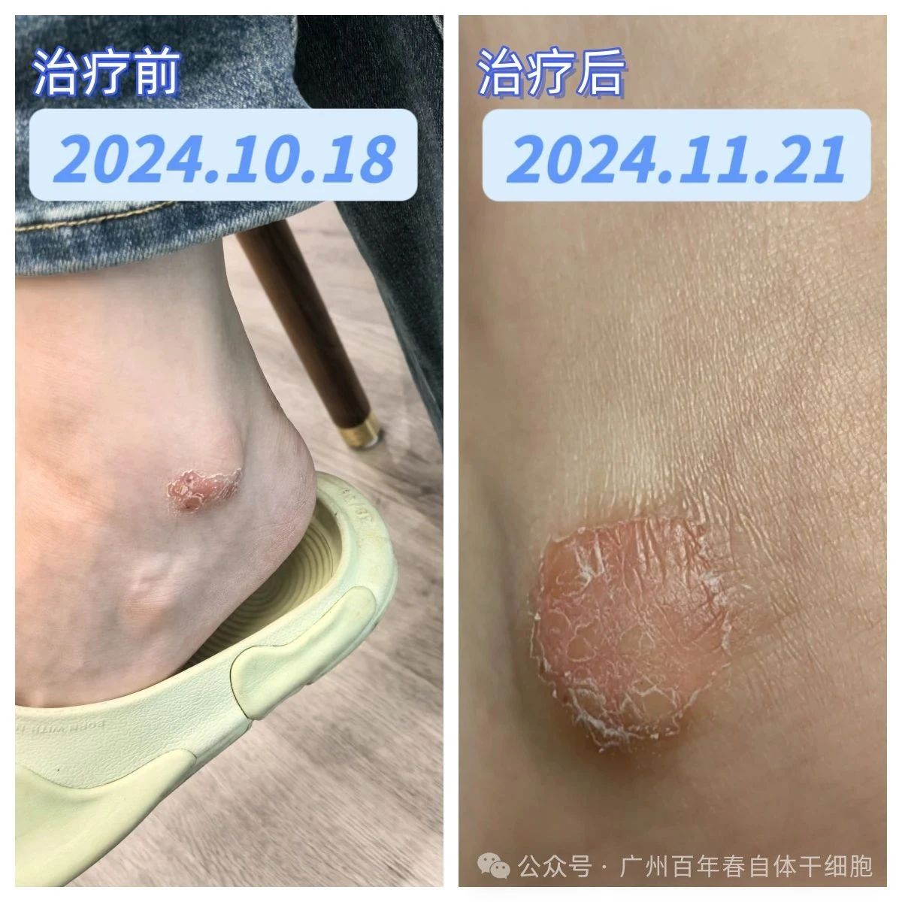
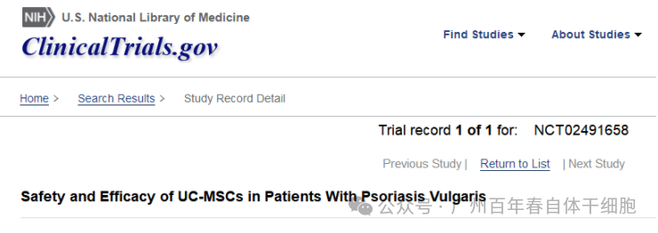

别等身体亮红灯！百年春自体干细胞，为您定制细胞级抗衰防线
2026-03-04

About Us
关于百年春

银屑病（Psoriasis）又称牛皮癣，是一种常见的慢性自身免疫性炎症皮肤病，其病程较长，有易复发倾向，有的病例几乎终生不愈。银屑病可合并多种并发症，由于体内内分泌紊乱和不良的生活习惯，容易造成代谢综合症（MS），如高血糖、高血脂、冠状动脉粥样硬化及心肌梗死等，大大降低了患者的生活质量，甚至缩短生命预期，引起了患者的关注与重视。
作为国际医学界公认的难题，虽然治疗方法在逐渐更新，但是仍需要寻找行之有效且具有突破性的治疗方法。
自体间充质干细胞是一种具有强大的增殖潜能和多向分化潜能，作为人体天然的 "炎症调节大师"，可调节修复体内失衡的免疫状态。

自体间充质干细胞具备六大机制：
银屑病病史10余年，广泛求医而不得医治。上半身躯干部位红斑、部分区域覆有银白色鳞屑；皮肤瘙痒，挠痒时皮屑易脱落；皮肤干燥，秋冬更加明显；酒后全身瘙痒加剧；生活质量受损。
方案：3亿自体间充质干细胞+100IU外泌体。
保健后：1月内躯干部红斑消失一半，未消失部分红斑变淡；其他症状改善明显。
方案：3亿自体间充质干细胞+100IU外泌体。
保健后：1月内躯干部红斑全部消失；其他症状改善明显。至今6年时间未复发。





△客户保健前后对比

随着间充质干细胞疗法的引入，在一定程度上打破了银屑病治疗困境，间充质干细胞凭借其强大的免疫调节特性，及时纠正银屑病患者体内失衡的免疫状态。
目前，已经有越来越多的干细胞治疗银屑病的临床研究正在开展中，并且相继发表的临床结果展现出了巨大的希望。未来，随着更多临床的开展，干细胞有望给银屑病带来更加有效的治疗选择。